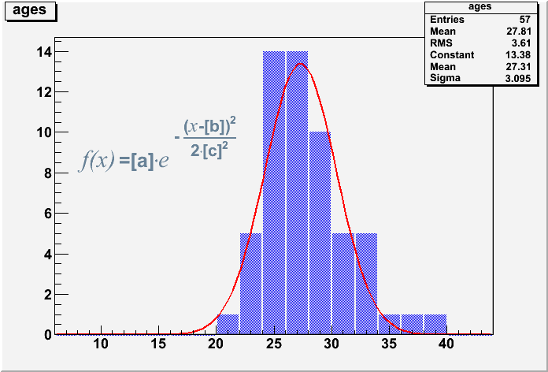

When you are done with today's exercise please do not proceed to the next day. Help your colleagues instead!
In this session you will learn about scopes, what constructors and assignment operators do, and how to draw histograms and change their style.
You need to download the code from 1.tar.bz2 and then run
tar xjf 1.tar.bz2 cd 1
These are your exercises for this session:
Run the macro histogram.C. It is supposed to display a histogram, but something is wrong. Fix the macro so the histogram gets displayed.
HELP!Execute the macro test_motorcycle.C. This macro loads a library containing the class TMotorcycle, and using this class it tries to display several motorcycle branchs and models. As you can see the macro has a bug - it only displays one kind of motorcycles. Fix that! You might want to run it in compiled mode with ACLiC (adding a "+" behind the file name).
HELP!TMotorcycle prints whenever its constructor or assignment operator etc are called. Why did that (mostly) stop when you fixed the macro?
In reality, these functions can be extremely expensive, e.g. for large vectors of large objects, so it is important to learn how to write code that avoids their invocation.
HELP!Execute ages.C. It creates and displays a histogram showing teh age distribution of the participants of the CSC08. Use the editor (in the TCanvas's menu under View > Editor) to make the histogram look like this one:

HELP!Save the histogram to styledhist.C (e.g. see the Canvas's file menue, or right-click the histogram) and look at that saved file. Restart ROOT and run styleshist.C to check that ROOT really does store the histogram as C++ code.
HELP!The style settings you set with the editor are preserved in the .C file. Identify and use the function calls in styleshist.C to change ages.C such that it displays the histogram styled like the example picture above.
HELP!